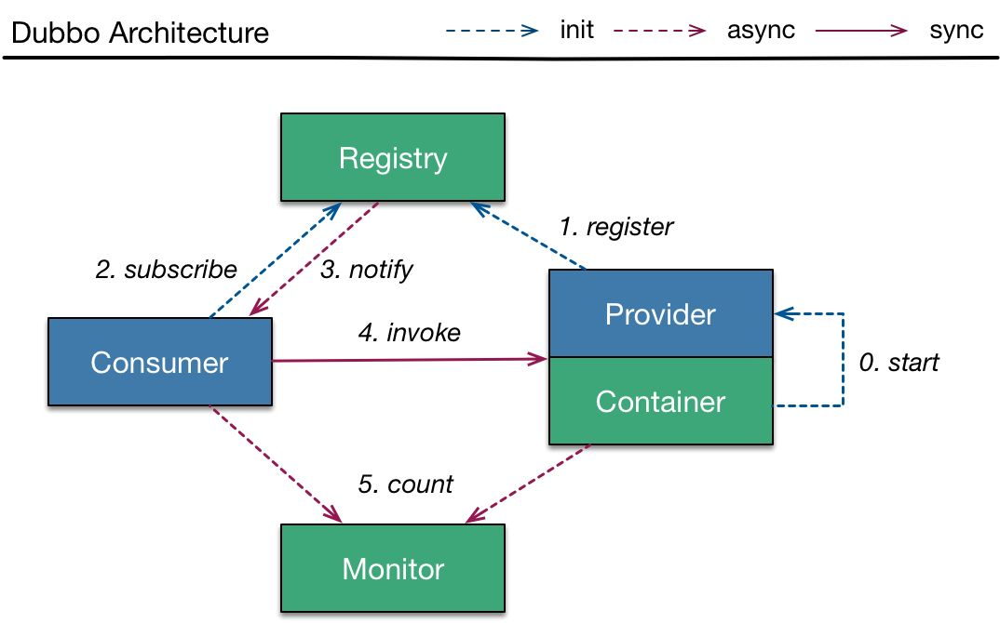
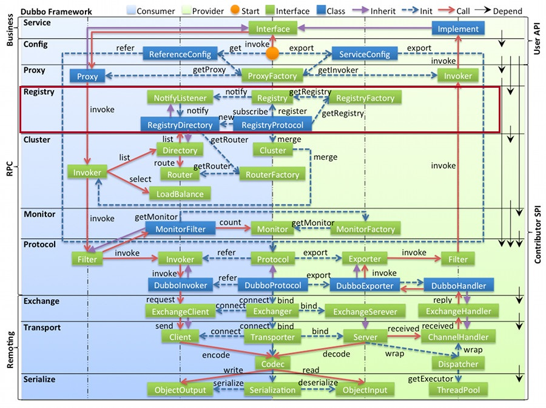
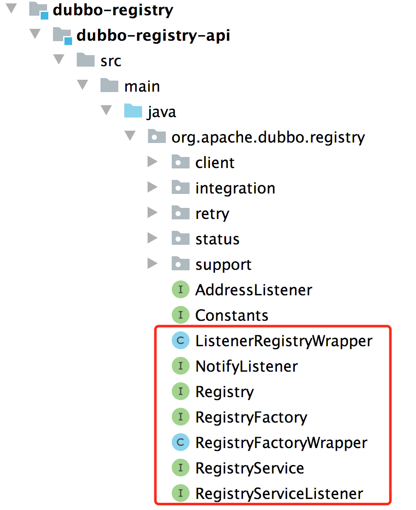
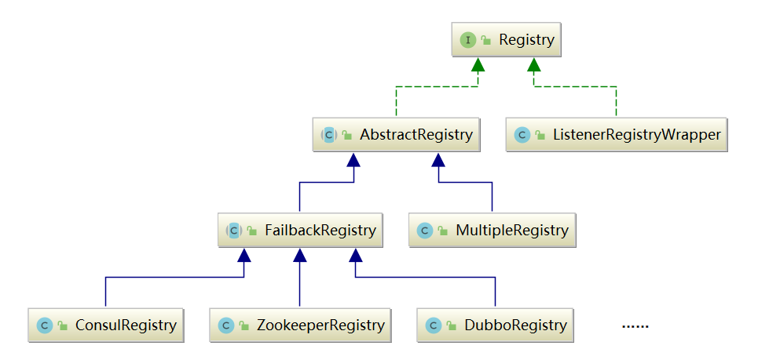
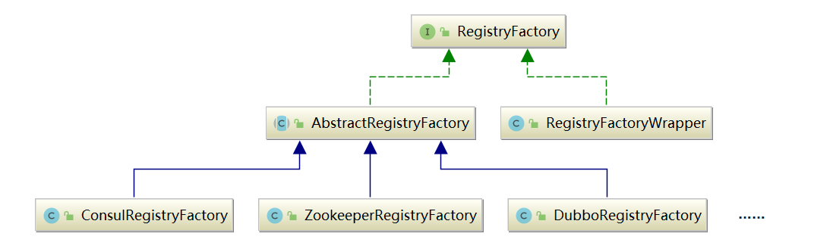
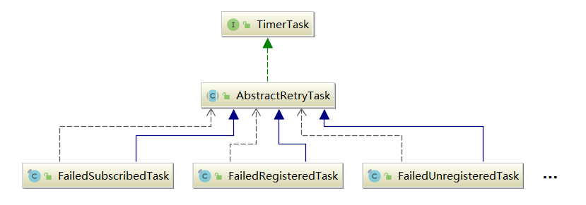
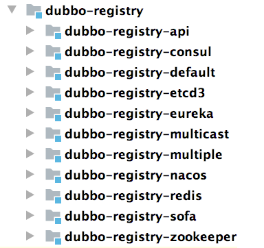
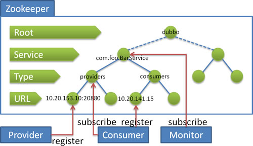
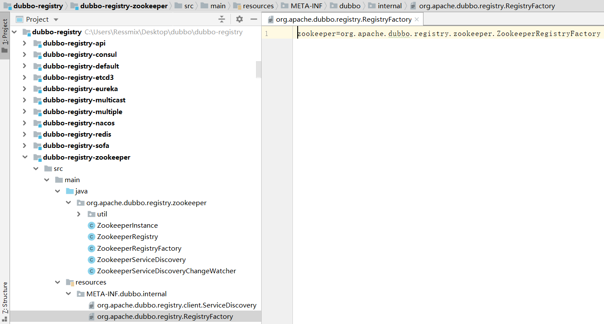
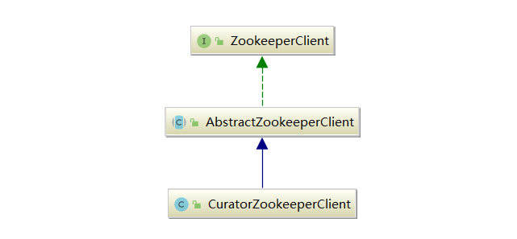

注册中心，在微服务中举足轻重：
服务提供者（Provider）：会向注册中心完成服务注册。
服务消费者（Consumer）：会完成对所需Provider的订阅操作，当Provider发生变化时，Registry会主动推送订阅了该Provider的所有Consumer。


图例说明：
图中左边淡蓝背景的为服务消费方使用的接口，右边淡绿色背景的为服务提供方使用的接口，位于中轴线上的为双方都用到的接口；
图中从下至上分为十层，各层均为单向依赖，右边的黑色箭头代表层之间的依赖关系，每一层都可以剥离上层被复用，其中，Service 和Config层为API，其它各层均为SPI；
图中绿色小块的为扩展接口，蓝色小块为实现类，图中只显示用于关联各层的实现类；
图中蓝色虚线为初始化过程，即启动时组装链，红色实线为方法调用过程，即运行时调时链，紫色三角箭头为继承，可以把子类看作父类的同一个节点，线上的文字为调用的方法。
registry注册中心层，封装了服务地址的注册与发现，以服务URL为中心，核心扩展接口为RegistryFactory、Registry、 RegistryService、NotifyListener。

在Dubbo中，一般使用Node这个接口来抽象节点的概念。 Node不仅可以表示Provider和Consumer节点，还可以表示注册中心节点。Node接口中定义了三个非常基础的方法：
x1// Node.java2
3public interface Node {4 /**5 * 返回当前节点的URL6 */7 URL getUrl();8
9 /**10 * 检测当前节点是否可用11 */12 boolean isAvailable();13
14 /**15 * 销毁当前节点并释放底层资源16 */17 void destroy();18}RegistryService 接口抽象了注册服务的基本行为：
311// RegistryService.java2
3public interface RegistryService {4
5 /**6 * 注册一个URL7 */8 void register(URL url);9
10 /**11 * 取消注册一个URL12 */13 void unregister(URL url);14
15 /**16 * 订阅一个 URL，订阅成功后，当订阅的数据发生变化时，注册中心会主动通知NotifyListener17 */18 void subscribe(URL url, NotifyListener listener);19
20 /**21 * 取消订阅一个URL22 */23 void unsubscribe(URL url, NotifyListener listener);24
25 /**26 * 查询符合条件的注册数据27 * 它与 subscribe() 方法有一定的区别，subscribe() 方法采用的是 push(推)模式，lookup() 方法采用的是 pull(拉) 模式28 */29 List<URL> lookup(URL url);30
31} Registry接口，继承了RegistryService接口和Node接口，它表示的就是一个拥有注册中心能力的节点，其中的reExportRegister()和reExportUnregister()方法都是委托给RegistryService中的相应方法：
121// Registry.java2
3public interface Registry extends Node, RegistryService {4
5 default void reExportRegister(URL url) {6 register(url);7 }8
9 default void reExportUnregister(URL url) {10 unregister(url);11 }12}
ListenerRegistryWrapper是Registry接口的Wrapper类，它的内部维护了一个 RegistryServiceListener 集合，会将 register()、subscribe() 等事件通知到 RegistryServiceListener 监听器。
371// ListenerRegistryWrapper.java2
3public class ListenerRegistryWrapper implements Registry {4 private final Registry registry;5 private final List<RegistryServiceListener> listeners;6
7 public ListenerRegistryWrapper(Registry registry, List<RegistryServiceListener> listeners) {8 this.registry = registry;9 this.listeners = listeners;10 }11
12 13 public void register(URL url) {14 try {15 registry.register(url);16 } finally {17 if (CollectionUtils.isNotEmpty(listeners)) {18 RuntimeException exception = null;19 for (RegistryServiceListener listener : listeners) {20 if (listener != null) {21 try {22 listener.onRegister(url);23 } catch (RuntimeException t) {24 logger.error(t.getMessage(), t);25 exception = t;26 }27 }28 }29 if (exception != null) {30 throw exception;31 }32 }33 }34 }35
36 //...37}AbstractRegistry实现了Registry接口，它抽取了所有Registry接口实现类的公共逻辑，提供了注册信息的本地缓存等公共能力，把当前节点订阅的URL信息缓存到本地的Properties文件中。
AbstractRegistry的核心字段如下:
381// AbstractRegistry.java2public abstract class AbstractRegistry implements Registry {4// 当前Registry对象的全部配置信息，构造时指定6private URL registryUrl;7// 本地的 Properties 文件缓存9// Properties文件是一个KV 结构，Key是当前节点作为Consumer的一个URL，Value是对应的Provider列表的URL，包含了providers、routes、configurators等。10// Properties中有一个特殊的Key值为registies，对应的Value是注册中心列表，其他记录的都是Provider列表。11private final Properties properties = new Properties();12// 本地的 Properties 文件14private File file;15// 一个单线程的线程池，当一个Provider的注册数据发生变化时，会将该Provider的全量数据同步到Properties文件和缓存中17// 如果 syncSaveFile == false，就由该线程池异步完成文件写入18private final ExecutorService registryCacheExecutor = Executors.newFixedThreadPool(1, new NamedThreadFactory("DubboSaveRegistryCache", true));19// 是否同步保存文件21// AbstractRegistry初始化时，会根据registryUrl中的file.cache参数值决定是否开启文件缓存22private boolean syncSaveFile;23// 注册数据的版本号，每次写入file文件时，都是全覆盖写入，而不是修改文件，所以需要版本控制25private final AtomicLong lastCacheChanged = new AtomicLong();26// 注册的 URL 集合28private final Set<URL> registered = new ConcurrentHashSet<>();29// 订阅URL的监听器集合，Key是被监听的URL，Value是相应的监听器集合31private final ConcurrentMap<URL, Set<NotifyListener>> subscribed = new ConcurrentHashMap<>();32// 第一层Key是当前节点作为Consumer的一个URL34// 第一层Value是一个Map集合，该Map集合的Key是Provider URL的分类（Category），例如providers、routes、configurators等，Value就是相应分类下的URL集合35private final ConcurrentMap<URL, Map<String, List<URL>>> notified = new ConcurrentHashMap<>();36//...38}
AbstractRegistry本地缓存：当Provider端暴露的URL发生变化时，注册中心会通知订阅了该Provider的所有Consumer的Registry组件，Registry组件会调用notify()方法，被通知的Consumer会完成本地缓存和properties文件的修改。我们看下notify方法。
811// AbstractRegistry.java2protected void notify(URL url, NotifyListener listener, List<URL> urls) {4//...5Map<String, List<URL>> result = new HashMap<>();7for (URL u : urls) {8// 需要Consumer URL与Provider URL匹配，匹配规则如下：9// 1.匹配 Consumer 和 Provider 的接口，双方接口相同或者其中一方为“*”，则匹配成功10// 2.匹配 Consumer 和 Provider 的 category11// 3.检测 Consumer URL 和 Provider URL 中的 enable 参数是否符合条件12// 4.检测 Consumer 和 Provider 端的 group、version 以及 classifier 是否符合条件13if (UrlUtils.isMatch(url, u)) {14// 根据Provider URL中的category参数进行分类15String category = u.getParameter(CATEGORY_KEY, DEFAULT_CATEGORY);16List<URL> categoryList = result.computeIfAbsent(category, k -> new ArrayList<>());17categoryList.add(u);18}19}20if (result.size() == 0) {21return;22}23Map<String, List<URL>> categoryNotified = notified.computeIfAbsent(url, u -> new ConcurrentHashMap<>());25for (Map.Entry<String, List<URL>> entry : result.entrySet()) {26String category = entry.getKey();27List<URL> categoryList = entry.getValue();28// 更新notified29categoryNotified.put(category, categoryList);30// 调用NotifyListener31listener.notify(categoryList);32// ---往下看---34// 更新properties文件缓存35saveProperties(url);36// ---end---37}38/**41* 更新properties文件缓存42*/43private void saveProperties(URL url) {44//...45try {46StringBuilder buf = new StringBuilder();47// 1. 取出当前 Consumer 订阅的各个Provider分类的 URL，以空格连接48Map<String, List<URL>> categoryNotified = notified.get(url);49if (categoryNotified != null) {50for (List<URL> us : categoryNotified.values()) {51for (URL u : us) {52if (buf.length() > 0) {53buf.append(URL_SEPARATOR);54}55buf.append(u.toFullString());56}57}58}59// 2.写入properties61properties.setProperty(url.getServiceKey(), buf.toString());62// 版本号+164long version = lastCacheChanged.incrementAndGet();65// 3.根据syncSaveFile字段值，决定是采用同步还是异步的方式更新file文件66if (syncSaveFile) {67// 同步68doSaveProperties(version);69} else {70// 异步71registryCacheExecutor.execute(new SaveProperties(version));72}73} catch (Throwable t) {74logger.warn(t.getMessage(), t);75}76}77// 注意：78// 1、本地缓存文件的具体路径是，/.dubbo/dubbo-registry-[当前应用名]-[当前Registry所在的IP地址].cache79// 2、在网络抖动等原因而导致订阅失败时，Consumer 端的 Registry 就可以调用 getCacheUrls() 方法获取本地缓存，80// 从而得到最近注册的 Provider URL。可见， AbstractRegistry 通过本地缓存提供了一种容错机制，保证了服务的可靠性 。81}
注册，AbstractRegistry的
registry()方法会将当前节点要注册的URL缓存到registered集合，而unregistry()方法会从registered集合删除指定的URL，例如当前节点下线的时候。
单看AbstractRegistry的实现，注册方法都是内存操作，但是Java有继承和多态的特性，AbstractRegistry的子类会覆盖上述注册方法进行增强。
111// AbstractRegistry.java2public void register(URL url) {4if (url == null) {5throw new IllegalArgumentException("register url == null");6}7if (logger.isInfoEnabled()) {8logger.info("Register: " + url);9}10registered.add(url);11}
订阅，AbstractRegistry的
subscribe()方法会将当前节点作为Consumer的URL以及相关的NotifyListener记录到subscribed集合，unsubscribe()方法会将当前节点作为Consumer的URL以及关联的NotifyListener从subscribed集合删除。
单看 AbstractRegistry 的实现，方法都是内存操作，但是 Java 有继承和多态的特性，AbstractRegistry 的子类会覆盖上述订阅方法进行增强。
151// AbstractRegistry.java23public void subscribe(URL url, NotifyListener listener) {4if (url == null) {5throw new IllegalArgumentException("subscribe url == null");6}7if (listener == null) {8throw new IllegalArgumentException("subscribe listener == null");9}10if (logger.isInfoEnabled()) {11logger.info("Subscribe: " + url);12}13Set<NotifyListener> listeners = subscribed.computeIfAbsent(url, n -> new ConcurrentHashSet<>());14listeners.add(listener);15}
恢复：在当前节点因为网络问题与注册中心断开连接后，会进行重连，重连成功之后，会调用 recover() 方法：
遍历
registered集合中的全部 URL，然后重新调用 register() 方法，恢复注册数据；遍历
subscribed集合中的全部 URL ，然后重新调用 subscribe() 方法，恢复订阅监听器。231// AbstractRegistry.java2protected void recover() throws Exception {4// 1.遍历registered集合中的全部 URL，重新注册5Set<URL> recoverRegistered = new HashSet<>(getRegistered());6if (!recoverRegistered.isEmpty()) {7for (URL url : recoverRegistered) {8// 注册9register(url);10}11}12// 2.遍历subscribed集合中的全部 URL，重新订阅13Map<URL, Set<NotifyListener>> recoverSubscribed = new HashMap<>(getSubscribed());14if (!recoverSubscribed.isEmpty()) {15for (Map.Entry<URL, Set<NotifyListener>> entry : recoverSubscribed.entrySet()) {16URL url = entry.getKey();17for (NotifyListener listener : entry.getValue()) {18// 订阅19subscribe(url, listener);20}21}22}23}
销毁：在当前节点下线时，会调用
destroy()方法释放底层资源。AbstractRegistry实现的destroy()方法会调用unregister()方法和unsubscribe()方法将当前节点注册的URL以及订阅的监听全部清理掉（不会清理非动态注册的URL，即dynamic参数明确指定为false）。361// AbstractRegistry.java2public void destroy() {4// 1.遍历registered集合中的全部 URL5Set<URL> destroyRegistered = new HashSet<>(getRegistered());6if (!destroyRegistered.isEmpty()) {7for (URL url : new HashSet<>(getRegistered())) {8// 只清理动态注册的url9if (url.getParameter(DYNAMIC_KEY, true)) {10try {11// 取消注册12unregister(url);13} catch (Throwable t) {14logger.warn("Failed to unregister url " + url + " to registry " + getUrl() + " on destroy, cause: " + t.getMessage(), t);15}16}17}18}19// 2.遍历subscribed集合中的全部 URL20Map<URL, Set<NotifyListener>> destroySubscribed = new HashMap<>(getSubscribed());21if (!destroySubscribed.isEmpty()) {22for (Map.Entry<URL, Set<NotifyListener>> entry : destroySubscribed.entrySet()) {23URL url = entry.getKey();24for (NotifyListener listener : entry.getValue()) {25try {26// 取消订阅27unsubscribe(url, listener);28} catch (Throwable t) {29logger.warn("Failed to unsubscribe url " + url + " to registry " + getUrl() + " on destroy, cause: " + t.getMessage(), t);30}31}32}33}34// 移除缓存的当前节点35AbstractRegistryFactory.removeDestroyedRegistry(this);36}
FailbackRegistry提供了失败重试的能力，本质也是一种保证服务可靠性的手段。覆盖了AbstractRegistry中 register()/unregister()、subscribe()/unsubscribe()以及notify() 这五个核心方法，并基于时间轮，实现了失败重试的能力。
FailbackRegistry核心字段：
341// FailbackRegistry.java2public abstract class FailbackRegistry extends AbstractRegistry {4// 注册失败的 URL 集合，其中 Key 是注册失败的 URL，Value 是对应的重试任务6private final ConcurrentMap<URL, FailedRegisteredTask> failedRegistered = new ConcurrentHashMap<URL, FailedRegisteredTask>();7// 取消注册失败的 URL 集合，其中 Key 是取消注册失败的 URL，Value 是对应的重试任务9private final ConcurrentMap<URL, FailedUnregisteredTask> failedUnregistered = new ConcurrentHashMap<URL, FailedUnregisteredTask>();10// 订阅失败 URL 集合，其中 Key 是订阅失败的 URL + Listener 集合，Value 是相应的重试任务12private final ConcurrentMap<Holder, FailedSubscribedTask> failedSubscribed = new ConcurrentHashMap<Holder, FailedSubscribedTask>();13// 取消订阅失败的 URL 集合，其中 Key 是取消订阅失败的 URL + Listener 集合，Value 是相应的重试任务15private final ConcurrentMap<Holder, FailedUnsubscribedTask> failedUnsubscribed = new ConcurrentHashMap<Holder, FailedUnsubscribedTask>();16// 通知失败的 URL 集合，其中 Key 是通知失败的 URL + Listener 集合，Value 是相应的重试任务18private final ConcurrentMap<Holder, FailedNotifiedTask> failedNotified = new ConcurrentHashMap<Holder, FailedNotifiedTask>();19// 重试时间间隔（毫秒）21private final int retryPeriod;22// 时间轮，用于执行失败重试操作24private final HashedWheelTimer retryTimer;25public FailbackRegistry(URL url) {27// 调用父类的方法 完成本地缓存相关的初始化操作28super(url);29// 传入的 URL 参数中获取重试时间间隔（retry.period 参数）来初始化 retryPeriod 字段，最后初始化时间轮30this.retryPeriod = url.getParameter(REGISTRY_RETRY_PERIOD_KEY, DEFAULT_REGISTRY_RETRY_PERIOD);31retryTimer = new HashedWheelTimer(new NamedThreadFactory("DubboRegistryRetryTimer", true), retryPeriod, TimeUnit.MILLISECONDS, 128);32}33//...34}
重试注册：对
register()/unregister()方法的实现都非常类似，看下 register() 方法的具体实现流程：
根据URL中的accepts参数指定的匹配模式，决定是否接受注册该URL；
调用父类
AbstractRegistry.register()方法，将ProviderURL写入父类的集合缓存中；将该ProviderURL从
failedRegistered集合和failedUnregistered集合中删除，并停止相关的重试任务；调用doRegister()方法执行注册，该方法由子类实现；
如果doRegister()方法抛出异常，则根据URL参数及异常类型进行分类处理，满足以下任一条件则直接抛出异常，否则创建重试任务并添加到failedRegistered集合中：
如果满足待注册URL的check参数为true（默认）且待注册URL不是consumer协议且当前节点自身的URL的check参数也为true。
抛出的异常为
SkipFailbackWrapperException。591// FailbackRegistry.java2public void register(URL url) {4// 1.根据URL中的 accepts 参数指定的匹配模式，决定是否接受注册该URL5if (!acceptable(url)) {6logger.info("URL " + url + " will not be registered to Registry. Registry " + url + " does not accept service of this protocol type.");7return;8}9// 2.调用父类方法，将 URL写入集合缓存中；11// FailbackRegistry.register()本质是委托子类完成实际的注册操作，自己则负责根据条件决定是否进行重试12super.register(url);13// 3.从集合中删除，并停止相关的重试任务15removeFailedRegistered(url);16removeFailedUnregistered(url);17// 4.执行注册19try {20doRegister(url);21} catch (Exception e) {22Throwable t = e;23// 5.1 检测URL check参数，决定是否直接抛出异常25boolean check = getUrl().getParameter(Constants.CHECK_KEY, true)26&& url.getParameter(Constants.CHECK_KEY, true)27&& !CONSUMER_PROTOCOL.equals(url.getProtocol());28boolean skipFailback = t instanceof SkipFailbackWrapperException;29if (check || skipFailback) {30if (skipFailback) {31t = t.getCause();32}33throw new IllegalStateException("Failed to register " + url + " to registry " + getUrl().getAddress() + ", cause: " + t.getMessage(), t);34} else {35logger.error("Failed to register " + url + ", waiting for retry, cause: " + t.getMessage(), t);36}37// ---往下看---39// 5.2 如果不抛出异常，则创建失败重试任务，并添加到failedRegistered集合中40addFailedRegistered(url);41// ---end---42}43}44// addFailedRegistered ---这儿呢---46private void addFailedRegistered(URL url) {47// 已经存在同一个失败重试任务，则无须创建，直接返回48FailedRegisteredTask oldOne = failedRegistered.get(url);49if (oldOne != null) {50return;51}52// 创建失败重试任务53FailedRegisteredTask newTask = new FailedRegisteredTask(url, this);54oldOne = failedRegistered.putIfAbsent(url, newTask);55if (oldOne == null) {56// 将任务提交到时间轮，等待retryPeriod毫秒后执行57retryTimer.newTimeout(newTask, retryPeriod, TimeUnit.MILLISECONDS);58}59}
重试订阅：FailbackRegistry对
subscribe()/unSubscribe()方法的实现都非常类似，所以这里我只介绍其中subscribe()方法的具体实现流程：
调用父类
AbstractRegistry.subscribe()方法，将URL写入父类的集合缓存中；将该URL从
failedSubscribed集合、failedUnsubscribed集合、failedNotified集合中删除，并停止相关的重试任务；调用doSubscribe()方法执行订阅，该方法由子类实现；
如果doSubscribe()方法抛出异常，则优先从父类缓存中获取订阅数据，并调用notify()方法。如果没有缓存相应的订阅数据，才会检查check参数决定是否继续抛出异常。
461// FailbackRegistry.java2public void subscribe(URL url, NotifyListener listener) {5// 1.调用父类方法，将 URL写入集合缓存中；6super.subscribe(url, listener);7// 2.从集合中删除，并停止相关的重试任务9removeFailedSubscribed(url, listener);10// 3.执行订阅12try {13doSubscribe(url, listener);14} catch (Exception e) {15Throwable t = e;16// 4.抛出异常，则优先从父类缓存中获取URL18List<URL> urls = getCacheUrls(url);19// 5.1 缓存不为空20if (CollectionUtils.isNotEmpty(urls)) {21// ---往下看 掉父类方法进行通知---22// 调用notify方法23notify(url, listener, urls);24// ---end---25logger.error("Failed to subscribe " + url + ", Using cached list: " + urls + " from cache file: " + getUrl().getParameter(FILE_KEY, System.getProperty("user.home") + "/dubbo-registry-" + url.getHost() + ".cache") + ", cause: " + t.getMessage(), t);26}27// 5.2 缓存为空28else {29// 根据 URL 参数及异常类型进行分类处理30boolean check = getUrl().getParameter(Constants.CHECK_KEY, true)31&& url.getParameter(Constants.CHECK_KEY, true);32boolean skipFailback = t instanceof SkipFailbackWrapperException;33if (check || skipFailback) {34if (skipFailback) {35t = t.getCause();36}37throw new IllegalStateException("Failed to subscribe " + url + ", cause: " + t.getMessage(), t);38} else {39logger.error("Failed to subscribe " + url + ", waiting for retry, cause: " + t.getMessage(), t);40}41}42// 添加重试任务44addFailedSubscribed(url, listener);45}46}
重试通知：上述流程中，当订阅异常并且父类缓存不为空时，会调用notify方法完成回调通知的逻辑，这部分逻辑由父类AbstractRegistry实现：
481// FailbackRegistry.java2protected void notify(URL url, NotifyListener listener, List<URL> urls) {3if (url == null) {4throw new IllegalArgumentException("notify url == null");5}6if (listener == null) {7throw new IllegalArgumentException("notify listener == null");8}9try {10// 回调通知 ---往下看---11doNotify(url, listener, urls);12} catch (Exception t) {13// 失败，则创建相应的 FailedNotifiedTask 重试任务14addFailedNotified(url, listener, urls);15logger.error("Failed to notify for subscribe " + url + ", waiting for retry, cause: " + t.getMessage(), t);16}17}18// ---这儿---20protected void doNotify(URL url, NotifyListener listener, List<URL> urls) {21// 调用父类AbstractRegistry的notify方法22super.notify(url, listener, urls);23}24// 父类AbstractRegistry 执行通知的核心代码26protected void notify(URL url, NotifyListener listener, List<URL> urls) {27//...28Map<String, List<URL>> result = new HashMap<>();29for (URL u : urls) {30if (UrlUtils.isMatch(url, u)) {31String category = u.getParameter(CATEGORY_KEY, DEFAULT_CATEGORY);32List<URL> categoryList = result.computeIfAbsent(category, k -> new ArrayList<>());33categoryList.add(u);34}35}36if (result.size() == 0) {37return;38}39Map<String, List<URL>> categoryNotified = notified.computeIfAbsent(url, u -> new ConcurrentHashMap<>());40for (Map.Entry<String, List<URL>> entry : result.entrySet()) {41String category = entry.getKey();42List<URL> categoryList = entry.getValue();43categoryNotified.put(category, categoryList);44// 回调 NotifyListener45listener.notify(categoryList);46saveProperties(url);47}48}
RegistryFactory接口，负责创建Registry对象，具体定义如下所示：
101// RegistryFactory.java2
3("dubbo")4public interface RegistryFactory {5 /**6 * 根据URL获取对应的Registry对象7 */8 ({"protocol"})9 Registry getRegistry(URL url);10} 上述的@SPI注解指定了默认的扩展名为dubbo，@Adaptive注解表示会生成适配器类并根据URL中的protocol参数值选择相应的实现。
此外，每一个类型的RegistryFactory，只会负责创建对应类型的Registry，比如默认的DubboRegistryFactory负责创建DubboRegistry，这是典型的工厂方法模式：

AbstractRegistryFactory是一个实现了RegistryFactory接口的抽象类，提供了规范URL的操作以及缓存Registry对象的公共能力，它通过模板方法模式让子类去实现具体的功能：
261// AbstractRegistryFactory.java 2public Registry getRegistry(URL url){3 url = URLBuilder.from(url)4 .setPath(RegistryService.class.getName())5 .addParameter(INTERFACE_KEY, RegistryService.class.getName())6 .removeParameters(EXPORT_KEY, REFER_KEY)7 .build();8 String key = createRegistryCacheKey(url);9 LOCK.lock();10 try{11 Registry registry = REGISTRIES.get(key);12 if(registry != null) {13 return registry;14 }15 16 // 抽象方法，由子类实现 17 registry = createRegistry(url);18 if(registry == null) {19 throw new IllegalStateException("Can not create registry "+url);20 }21 REGISTRIES.put(key, registry);22 return registry;23 }finally{24 LOCK.unlock();25 }26} RegistryFactoryWrapper是RegistryFactory接口的Wrapper类，它会对底层RegistryFactory创建的Registry对象外层再封装一个ListenerRegistryWrapper。
201// RegistryFactoryWrapper.java 2
3public class RegistryFactoryWrapper implements RegistryFactory{4 private RegistryFactory registryFactory;5
6 public RegistryFactoryWrapper(RegistryFactory registryFactory){7 this.registryFactory = registryFactory;8 }9
10 11 public Registry getRegistry(URL url){12 return new ListenerRegistryWrapper(13 registryFactory.getRegistry(url),14 Collections.unmodifiableList(15 ExtensionLoader.getExtensionLoader(RegistryServiceListener.class)16 .getActivateExtension(url, "registry.listeners")17 )18 );19 }20}FailbackRegistry在添加重试任务时（addFailedRegistered/addFailedSubscribed等方法），实际就是创建了AbstractRetryTask的各个子类对象，然后由时间轮调用执行，如下图所示：

AbstractRetryTask中维护了当前任务关联的URL、当前重试的次数等信息，其run()方法会根据重试URL中指定的重试次数（retry.times参数，默认3）、任务是否被取消、以及时间轮状态，决定此次任务的doRetry()方法是否正常执行，doRetry是一个抽象方法，由子类实现：
231// AbstractRetryTask.java2
3public void run(Timeout timeout) throws Exception {4 // 检测定时任务状态和时间轮状态5 if (timeout.isCancelled() || timeout.timer().isStop() || isCancel()) {6 return;7 }8
9 // 检查重试次数10 if (times > retryTimes) {11 logger.warn("Final failed to execute task " + taskName + ", url: " + url + ", retry " + retryTimes + " times.");12 return;13 }14
15 // 执行重试，抽象方法，子类负责实现16 try {17 doRetry(url, registry, timeout);18 } catch (Throwable t) {19 logger.warn("Failed to execute task " + taskName + ", url: " + url + ", waiting for again, cause:" + t.getMessage(), t);20 // 异常则重新添加定时任务，等待重试21 reput(timeout, retryPeriod);22 }23}AbstractRetryTask的实现类，实现了doRetry方法。
181// FailedRegisteredTask.java2
3public final class FailedRegisteredTask extends AbstractRetryTask {4
5 private static final String NAME = "retry register";6
7 public FailedRegisteredTask(URL url, FailbackRegistry registry) {8 super(url, registry, NAME);9 }10
11 12 protected void doRetry(URL url, FailbackRegistry registry, Timeout timeout) {13 // 重新执行注册14 registry.doRegister(url);15 // 注册成功则删除重试任务16 registry.removeFailedRegisteredTask(url);17 }18} Dubbo支持多种不同的注册中心实现，从源码的dubbo-registry模块的层级目录就可以看出来：

Dubbo官方推荐使用ZooKeeper作为注册中心，所以本章我就来讲解Dubbo对ZooKeeper的集成，并对相关组件的源码进行分析。
ZooKeeper是一款用于分布式协调的开源中间件。它是一个树型的目录结构，支持变更推送。下面是Dubbo官方文档中的一张图，展示了 Dubbo在Zookeeper中的节点层级结构：

图例解释：
名为
dubbo的节点是Dubbo 在Zookeeper中的根节点；Service层的节点名称是服务接口的全限定名，比如
org.apache.dubbo.demo.DemoService等；Type层的节点是URL的分类，一共有四种分类：providers（服务提供者列表）、consumers（服务消费者列表）、routes（路由规则列表）和configurations（配置规则列表）；
不同的Type节点，对应URL层的不同URL：ProviderURL、ConsumerURL、RoutesURL和ConfigurationsURL。
2-4步中已经对RegistryFactory接口及其抽象实现AbstractRegistryFactory进行了分析AbstractRegistryFactory 仅仅提供了缓存 Registry 对象等公共能力，并未真正实现 Registry 的创建，具体的创建逻辑是由子类完成的。
每一个RegistryFactory子类，只会负责创建对应类型的Registry：
101// RegistryFactory.java2
3("dubbo")4public interface RegistryFactory {5 /**6 * 根据URL获取对应的Registry对象7 */8 ({"protocol"})9 Registry getRegistry(URL url);10} 在 dubbo-registry-zookeeper 模块中的SPI配置文件中，指定了RegistryFactory的实现类ZookeeperRegistryFactory

ZookeeperRegistryFactory构造器：非常简单，只有一个无参构造函数。需要注意的是，ZookeeperRegistryFactory提供了一个 setZookeeperTransporter() 方法，Dubbo会通过SPI机制完成ZookeeperTransporter扩展对象的自动装载：
171// ZookeeperRegistryFactory.java2
3public class ZookeeperRegistryFactory extends AbstractRegistryFactory {4
5 // ---看3-4步---6 private ZookeeperTransporter zookeeperTransporter;7
8 public void setZookeeperTransporter(ZookeeperTransporter zookeeperTransporter) {9 this.zookeeperTransporter = zookeeperTransporter;10 }11
12 13 public Registry createRegistry(URL url) {14 // ---看3-3步---15 return new ZookeeperRegistry(url, zookeeperTransporter);16 }17} ZookeeperRegistryFactory继承了AbstractRegistryFactory，覆写了createRegistry()方法：创建 ZookeeperRegistry实例，后续将由该实例完成与Zookeeper注册中心的交互。
ZookeeperRegistry就是一个具有与Zookeeper注册中心进行通信、服务注册/订阅/通知等能力的Registry节点。
在它的构造方法中，会通过ZookeeperTransporter创建ZookeeperClient实例并连接到Zookeeper集群，同时还会添加一个连接状态监听器。该监听器主要关注RECONNECTED状态和NEW_SESSION_CREATED状态，在当前 Dubbo 节点与 Zookeeper 的连接恢复或是 Session 恢复时，会重新进行注册/订阅，防止数据丢失：
511// ZookeeperRegistry.java2
3public class ZookeeperRegistry extends FailbackRegistry {4 // Zookeeper中的dubbo根目录5 private final static String DEFAULT_ROOT = "dubbo";6
7 private final String root;8
9 private final Set<String> anyServices = new ConcurrentHashSet<>();10
11 private final ConcurrentMap<URL, ConcurrentMap<NotifyListener, ChildListener>> zkListeners = new ConcurrentHashMap<>();12
13 // Zookeeper客户端，位于dubbo-remoting模块14 private final ZookeeperClient zkClient;15
16 public ZookeeperRegistry(URL url, ZookeeperTransporter zookeeperTransporter) {17 super(url);18 if (url.isAnyHost()) {19 throw new IllegalStateException("registry address == null");20 }21 String group = url.getParameter(GROUP_KEY, DEFAULT_ROOT);22 if (!group.startsWith(PATH_SEPARATOR)) {23 group = PATH_SEPARATOR + group;24 }25 this.root = group;26 27 // 连接Zookeeper集群28 zkClient = zookeeperTransporter.connect(url);29 30 // 添加一个连接状态监听器31 zkClient.addStateListener((state) -> {32 // RECONNECTED重新连接状态33 if (state == StateListener.RECONNECTED) {34 ZookeeperRegistry.this.fetchLatestAddresses();35 } 36 37 // NEW_SESSION_CREATED会话新建状态38 else if (state == StateListener.NEW_SESSION_CREATED) {39 try {40 ZookeeperRegistry.this.recover();41 } catch (Exception e) {42 logger.error(e.getMessage(), e);43 }44 } else if (state == StateListener.SESSION_LOST) {45 } else if (state == StateListener.SUSPENDED) {46 } else if (state == StateListener.CONNECTED) {47 }48 });49 }50 //...51}ZookeeperRegistry的
doRegister()方法和doUnregister()方法的实现都是通过ZookeeperClient找到合适的路径，然后创建（或删除）相应的ZNode节点。doRegister()方法注册Provider URL的时，会根据dynamic参数决定创建临时 ZNode节点（默认）还是持久ZNode节点，这样当Provider与Zookeeper会话关闭时，可以快速将变更推送到Consumer端。ZookeeperRegistry的
doSubscribe()方法的核心是通过ZookeeperClient在指定的path上添加ChildListener监听器，当订阅的节点发现变化时，会通过ChildListener监听器触发notify()方法，在notify()方法中会触发传入的NotifyListener监听器。
ZookeeperTransporter位于dubbo-remoting模块的dubbo-remoting-zookeeper子模块中。其中的子模块依赖各种开源组件实现远程通信。
dubbo-remoting-zookeeper 就是在 Apache Curator的基础上封装了一套Zookeeper客户端，将与Zookeeper的交互融合到 Dubbo的体系之中。dubbo-remoting-zookeeper 模块中有两个核心接口： ZookeeperTransporter 接口和 ZookeeperClient 接口：
81// ZookeeperTransporter.java2
3("curator")4public interface ZookeeperTransporter {5 // 与URL中指定的Zookeeper集群建立连接，并返回一个ZookeeperClient实例6 ({Constants.CLIENT_KEY, Constants.TRANSPORTER_KEY})7 ZookeeperClient connect(URL url);8}
ZookeeperTransporter说明：该接口被@SPI注解修饰，成为一个扩展点，默认选择扩展名为"curator"的实现，其中的connect() 方法用于创建ZookeeperClient实例，该方法被@Adaptive注解修饰，所以可以通过URL参数中的
client或transporter参数覆盖 @SPI 注解指定的默认扩展对象。AbstractZookeeperTransporter默认实现类：核心功能，缓存ZookeeperClient实例、切换ZK备用地址。
在某个ZK节点无法连接时，切换到备用ZK地址：在配置ZK地址时，我们可以配置多个ZK节点地址，这样即使一个ZK节点宕机后，Dubbo也可以主动切换到其它ZK节点。例如，我们可以提供如下的URL配置：
zookeeper://127.0.0.1:2181/org.apache.dubbo.registry.RegistryService?backup=127.0.0.1:8989,127.0.0.1:9999421// AbstractZookeeperTransporter.java2public abstract class AbstractZookeeperTransporter implements ZookeeperTransporter {4// 缓存，Key 为 Zookeeper 节点地址，Value 是相应的 ZookeeperClient 实例6private final Map<String, ZookeeperClient> zookeeperClientMap = new ConcurrentHashMap<>();7public ZookeeperClient connect(URL url) {10ZookeeperClient zookeeperClient;11// 从URL中解析备份Zookeeper节点地址13List<String> addressList = getURLBackupAddress(url);14// 优先从缓存获取zookeeperClient实例16if ((zookeeperClient = fetchAndUpdateZookeeperClientCache(addressList)) != null17&& zookeeperClient.isConnected()) {18logger.info("find valid zookeeper client from the cache for address: " + url);19return zookeeperClient;20}21synchronized (zookeeperClientMap) {23if ((zookeeperClient = fetchAndUpdateZookeeperClientCache(addressList)) != null24&& zookeeperClient.isConnected()) {25logger.info("find valid zookeeper client from the cache for address: " + url);26return zookeeperClient;27}28// 不存在则创建并缓存，createZookeeperClient是一个抽象方法，由子类实现30zookeeperClient = createZookeeperClient(url);31logger.info("No valid zookeeper client found from cache, therefore create a new client for url. " + url);32writeToClientMap(addressList, zookeeperClient);33}34return zookeeperClient;35}36}37// 主要逻辑：39// -> 1.首先解析 URL 中配置的Zookeeper节点地址；40// -> 2.然后从 ZookeeperClientMap缓存中查找一个可用ZookeeperClient实例：(key是ZK节点地址，Value是相应的ZKClient实例）41// -> 如果查找成功，则复用 ZookeeperClient 实例；42// -> 如果查找失败，则创建一个新的 ZookeeperClient 实例返回并更新 ZookeeperClientMap 缓存。CuratorZookeeperTransporter：AbstractZookeeperTransporter子类，
91// CuratorZookeeperTransporter.java2public class CuratorZookeeperTransporter extends AbstractZookeeperTransporter {4// 就是创建一个 CuratorZookeeperClient5public ZookeeperClient createZookeeperClient(URL url) {7return new CuratorZookeeperClient(url);8}9}
ZookeeperClient接口是Dubbo封装的Zookeeper客户端，该接口定义了大量的方法，都是用来与Zookeeper进行交互的：

ZookeeperClient接口方法：
341// ZookeeperClient.java2
3public interface ZookeeperClient {4
5 // 创建 ZNode 节点6 void create(String path, boolean ephemeral);7
8 // 创建临时 ZNode 节点9 void create(String path, String content, boolean ephemeral);10
11 // 删除节点12 void delete(String path);13
14 // 获取指定节点的子节点集合15 List<String> getChildren(String path);16
17 // 关闭当前 ZookeeperClient 实例18 void close();19
20 // 获取某个节点存储的内容21 String getContent(String path);22
23 // 添加子节点监听器，监听某个ZNode节点下的子节点变化24 List<String> addChildListener(String path, ChildListener listener);25
26 // 添加数据监听器，监听某个节点存储的数据变化27 void addDataListener(String path, DataListener listener);28
29 // 添加状态监听器，监听Dubbo与Zookeeper集群的连接状态30 // SESSION_LOST、CONNECTED、RECONNECTED、SUSPENDED、NEW_SESSION_CREATED31 void addStateListener(StateListener listener);32
33 //...34}AbstractZookeeperClient：
缓存当前ZKClient实例创建的持久ZNode节点。
管理当前ZKClient实例添加的各类监听器。
管理当前ZKClient的运行状态。
核心字段：AbstractZookeeperClient内部维护了
stateListeners、listeners以及childListeners三个集合，分别管理三种类型的监听器，虽然监听内容不同，但是它们的管理方式是类似的：271// AbstractZookeeperClient.java2public abstract class AbstractZookeeperClient<TargetDataListener, TargetChildListener> implements ZookeeperClient {4// 连接超时时长，默认5秒5protected int DEFAULT_CONNECTION_TIMEOUT_MS = 5 * 1000;6// 客户端会话超时时长，默认60秒7protected int DEFAULT_SESSION_TIMEOUT_MS = 60 * 1000;8// 目标URL10private final URL url;11// 状态监听器集合13private final Set<StateListener> stateListeners = new CopyOnWriteArraySet<StateListener>();14// 字节点监听器集合16private final ConcurrentMap<String, ConcurrentMap<ChildListener, TargetChildListener>> childListeners = new ConcurrentHashMap<String, ConcurrentMap<ChildListener, TargetChildListener>>();17// 数据监听器集合19private final ConcurrentMap<String, ConcurrentMap<DataListener, TargetDataListener>> listeners = new ConcurrentHashMap<String, ConcurrentMap<DataListener, TargetDataListener>>();20// 缓存了当前 ZookeeperClient 创建的持久ZNod节点路径22// 在创建ZNode节点之前，会先查这个缓存，而不是与Zookeeper集群交互来判断持久ZNode节点是否存在23// 从而减少了一次与Zookeeper集群通讯的网络开销24private final Set<String> persistentExistNodePath = new ConcurrentHashSet<>();25//...27}
分析listeners集合的操作：
221// AbstractZookeeperClient.java2public void addDataListener(String path, DataListener listener) {4this.addDataListener(path, listener, null);5}6public void addDataListener(String path, DataListener listener, Executor executor) {8// 获取指定path上的DataListener集合9ConcurrentMap<DataListener, TargetDataListener> dataListenerMap =10listeners.computeIfAbsent(path, k -> new ConcurrentHashMap<>());11// 查询该DataListener关联的TargetDataListener13TargetDataListener targetListener = dataListenerMap.computeIfAbsent(listener,14k -> createTargetDataListener(path, k));15// 通过TargetDataListener在指定的path上添加监听17addTargetDataListener(path, targetListener, executor);18}19protected abstract TargetDataListener createTargetDataListener(String path, DataListener listener);21protected abstract void addTargetDataListener(String path, TargetDataListener listener, Executor executor);上述的
createTargetDataListener()方法和addTargetDataListener()方法都是抽象方法，由 AbstractZookeeperClient的子类实现。TargetDataListener是AbstractZookeeperClient中标记的一个泛型。思考：为什么AbstractZookeeperClient 要使用泛型定义？
回答：因为不同的 ZookeeperClient 实现可能依赖不同的 Zookeeper 客户端组件，不同 Zookeeper 客户端组件的监听器实现也有所不同，而整个
dubbo-remoting-zookeeper模块对外暴露的监听器是统一的，就是上面介绍的那三种。因此，这时就需要一层转换进行解耦，这层解耦就是通过 TargetDataListener 完成的。注意：Dubbo 2.7.x 版本中只支持Apache Curator，老版本 Dubbo 2.6.5 中，ZookeeperClient 使用了 ZkClient 。
CuratorZookeeperClient：在构造时会初始化Curator客户端并阻塞等待连接成功，CuratorZookeeperClient与Zookeeper交互的全部操作，都是围绕着Apache Curator客户端展开的：
构造器：
CuratorWatcherImpl是CuratorZookeeperClient实现AbstractZookeeperClient时指定的泛型类，它实现了 TreeCacheListener接口，可以添加到TreeCache 监听自身节点以及子节点的变化。361// CuratorZookeeperClient.java2public class CuratorZookeeperClient extends AbstractZookeeperClient<CuratorZookeeperClient.CuratorWatcherImpl, CuratorZookeeperClient.CuratorWatcherImpl> {3public CuratorZookeeperClient(URL url) {5super(url);6try {7// 解析连接超时参数8int timeout = url.getParameter(TIMEOUT_KEY, DEFAULT_CONNECTION_TIMEOUT_MS);9// 解析绘画超时参数10int sessionExpireMs = url.getParameter(ZK_SESSION_EXPIRE_KEY, DEFAULT_SESSION_TIMEOUT_MS);11// 使用Curator建立与Zookeeper集群的连接13CuratorFrameworkFactory.Builder builder = CuratorFrameworkFactory.builder()14.connectString(url.getBackupAddress())15.retryPolicy(new RetryNTimes(1, 1000))16.connectionTimeoutMs(timeout)17.sessionTimeoutMs(sessionExpireMs);18String authority = url.getAuthority();19if (authority != null && authority.length() > 0) {20builder = builder.authorization("digest", authority.getBytes());21}22client = builder.build();23// 添加连接状态的监听24client.getConnectionStateListenable().addListener(new CuratorConnectionStateListener(url));25client.start();26// 阻塞等待直到建立连接27boolean connected = client.blockUntilConnected(timeout, TimeUnit.MILLISECONDS);28if (!connected) {29throw new IllegalStateException("zookeeper not connected");30}31} catch (Exception e) {32throw new IllegalStateException(e.getMessage(), e);33}34}35//...36}
在
CuratorZookeeperClient.childEvent()方法的实现中我们可以看到，当TreeCache关注的树型结构发生变化时，会将触发事件的路径、节点内容以及事件类型传递给关联的 DataListener 实例进行回调：451// CuratorZookeeperClient.CuratorWatcherImpl.java2public void childEvent(CuratorFramework client, TreeCacheEvent event) throws Exception {4if (dataListener != null) {5if (logger.isDebugEnabled()) {6logger.debug("listen the zookeeper changed. The changed data:" + event.getData());7}8TreeCacheEvent.Type type = event.getType();9EventType eventType = null;10String content = null;11String path = null;12switch (type) {13case NODE_ADDED:14eventType = EventType.NodeCreated;15path = event.getData().getPath();16content = event.getData().getData() == null ? "" : new String(event.getData().getData(), CHARSET);17break;18case NODE_UPDATED:19eventType = EventType.NodeDataChanged;20path = event.getData().getPath();21content = event.getData().getData() == null ? "" : new String(event.getData().getData(), CHARSET);22break;23case NODE_REMOVED:24path = event.getData().getPath();25eventType = EventType.NodeDeleted;26break;27case INITIALIZED:28eventType = EventType.INITIALIZED;29break;30case CONNECTION_LOST:31eventType = EventType.CONNECTION_LOST;32break;33case CONNECTION_RECONNECTED:34eventType = EventType.CONNECTION_RECONNECTED;35break;36case CONNECTION_SUSPENDED:37eventType = EventType.CONNECTION_SUSPENDED;38break;39}41// 回调DataListener，传递触发事件的path、节点内容以及事件类型43dataListener.dataChanged(path, content, eventType);44}45}
addTargetDataListener：在
CuratorZookeeperClient.addTargetDataListener()方法中，我们可以看到 TreeCache的创建、启动逻辑以及添加 CuratorWatcherImpl 监听的逻辑：211// CuratorZookeeperClient.java2protected void addTargetDataListener(String path, CuratorZookeeperClient.CuratorWatcherImpl treeCacheListener, Executor executor) {4try {5// 创建TreeCache6TreeCache treeCache = TreeCache.newBuilder(client, path).setCacheData(false).build();7// 缓存TreeCache8treeCacheMap.putIfAbsent(path, treeCache);9// 添加监听11if (executor == null) {12treeCache.getListenable().addListener(treeCacheListener);13} else {14treeCache.getListenable().addListener(treeCacheListener, executor);15}16//启动17treeCache.start();18} catch (Exception e) {19throw new IllegalStateException("Add treeCache listener for path:" + path, e);20}21}
总结：对 Dubbo 接入 Zookeeper 注册中心的核心实现进行了讲解，与 Zookeeper 注册中心的通信事实上是通过
dubbo-remoting模块中的 ZookeeperTransporter 和 ZookeeperClient 完成的。ZookeeperClient 本质就是一个Zookeeper客户端，Dubbo在
2.7.x中，只提供了基于Apache Curator的ZookeeperClient 实现，而ZookeeperRegistry底层就是依赖ZookeeperClient 完成与注册中心之间的通信，从而实现实现 Registry 的相关功能。